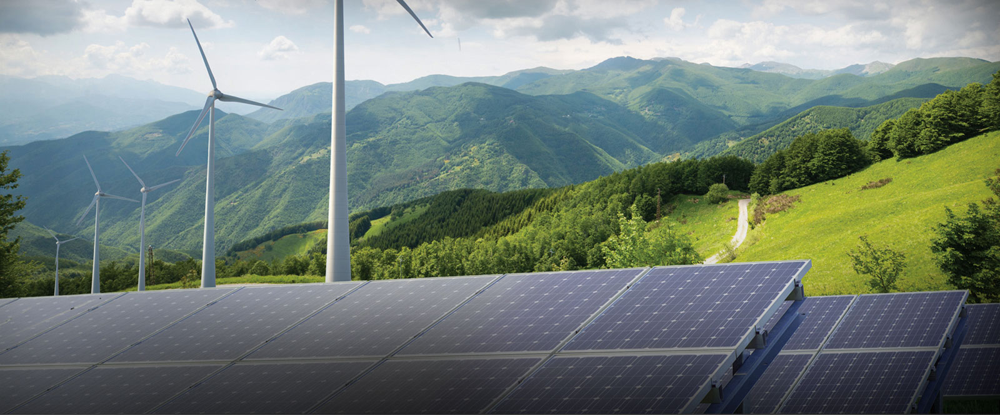
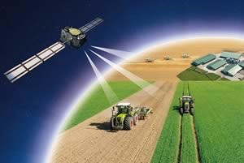

|  |
The
Functionality for this tech is infinite , from drip system pipes , to
AI-based drones with auto irrigation - All at the fingertips of the
user brought by an app. Automation of farming envisages monitoring and
controlling of various parameters which could be helpful in increasing
productivity. The proposed system provides a technological solution to
the various problems like, maintenance of water requirements, humidity
level, maintainence of proper temperature and availibility of light.
|
| International solar pump suppliers offer monitoring equipment not only for operation of the water lifting system, but also for additional functions including data collection and monitoring – e.g. water level measurements and/or remote switching of the pump based on specific parameters (water needs, water source level, etc.) |
| IoT (Internet of Things) platforms will give SPIS (connected to the Internet, as described previously) the opportunity to receive additional services through this platform based on tracked sensors, flow meters and camera technology. For example, farmers can get a daily pump usage and weather report, along with crop management recommendations. This will no longer be limited to bigger systems. Solar energy will provide the power for data collection and transmission. For all the new technologies, however, intensive education and training will be required. |  |
|  | The amount of irrigation water on the field will have to be monitored more precisely and regularly. As water becomes less available, this aspect will play an ever more important role. For this purpose, a differentiation should be made between monitoring water applied, which can be easily measured in pressurized systems with flow meters, and water transpired, which can be assessed through remote sensing technologies measuring evapotranspiration and biomass production. Modern technologies will become increasingly common – for example, monitoring of irrigated fields with drones and thermal imaging cameras |